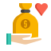

Torneo Solidario
Objetivos
Cada equipo, patrocinado por al menos una empresa (que pondrá un mínimo de 100€ para Cruz Roja), se recaudará dinero y alimentos de primera necesidad que se recogerá durante la celebración de los partidos, porque Cruz Roja aportará unas cajas donde depositar los alimentos de primera necesidad y que llevarán a sus instalaciones.Informaremos sobre lo recaudado e informaremos de como realizar donaciones a la iniciativa creada
Recaudación

Se “disputará” el Torneo Solidario, de manera paralela a la celebración del Torneo Deportivo.
Los mismos equipos que participan en el Torneo Deportivo tratarán de convertirse en el equipo
campeón del Torneo Solidario. Para conseguirlo, deberán ser capaces de recaudar la
mayor cantidad de alimentos posibles. Pero no solamente a través de las donaciones de los componentes del equipo,
si no que sus compañeros de clase, sus amistades y sus familiares podrán también colaborar con ellos para alzarse
con el trofeo al equipo campeón del Torneo Solidario. Este trofeo será entregado por las autoridades invitadas a presenciar el evento.
Donaciones
¿Te gustaría contribuir? Fácil, acércate a nuestro pabellón deportivo y trae alimentos no perecederos y
ayúdanos a llenar las cestas de donación. Durante el evento, estaremos recogiendo alimentos
para apoyar a las familias necesitadas de nuestra comunidad.
Tu generosidad hará posible que aquellos que enfrentan dificultades
tengan acceso a alimentos nutritivos y básicos.
¡Cada kilo suma! Si prefieres apoyarnos económicamente,
¡no te preocupes! Nuestros compañeros del IES Peñacastillo
han preparado alimentos y bebidas saludables que estarán disponibles durante la celebración del Torneo Deportivo.
Por cada compra que realices, estarás contribuyendo directamente a nuestra causa. Desde deliciosas barritas energéticas
hasta bebidas refrescantes, cada adquisición ayudará a alcanzar el objetivo de desarrollo sostenible hambre cero.
¡Compra con conciencia y ayuda a alimentar a quienes más lo necesitan!
Patrocinadores
Patrocinador 1
Patrocinador 2
Patrocinador 3
Patrocinador 4